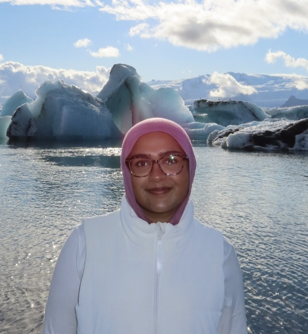

Exploring how we think, learn, perceive, and interact with the world.

Turning ideas into real life impact through code.
Hi! I'm Zainab Vohra, a student at Rutgers University pursuing a B.S. in Computer Science and a B.A. in Cognitive Science. I'm currently exploring the intersection of technology, people, and the way we interact with the world around us. I expect to graduate in May 2028.
My interest in computer science started unexpectedly during my sophomore year of high school. Due to a scheduling mix up, the only class available was Java II, so I decided to give it a try. I picked up coding surprisingly quickly and fell in love with the ability to create things from scratch. From there, I continued exploring computer science and eventually decided to major in it at Rutgers.
When I got to Rutgers, I decided to branch out and take an Introduction to Cognitive Science course. I quickly realized how much overlap there was between cognitive science and computer science, and I became fascinated by the intersection of the two. That’s where my journey into cognitive science began.
Since then, I’ve been interested in exploring how technology and the way people think, learn, and interact can come together. I’m especially interested in careers at the intersection of technology and people, whether that means designing better user experiences, working on AI products, exploring human-computer interaction, or solving problems from a product perspective.
Human computer interaction, AI, UX, Product design, Technology consulting, Solutions engineering
I love traveling and exploring new places, creating fun lattes, baking, reading, and I'm obsessed with my two cats!
Built a console-based application to calculate Basal Metabolic Rate (BMR), daily caloric intake, and projected weight change using user provided inputs.
Skills: Python
Built a personal portfolio website to showcase my background, projects, interests, and experience.
Skills: HTML, CSS, Javascript
Currently, I'm entering my junior year at Rutgers, where some of the courses I'm taking include Minds, Machines, and Persons, Intro to AI, Imaging and Multimedia, and Design & Analysis of Computer Algorithms. After finishing up my personal website, I'm excited to start brainstorming what my next project will be. Outside of school, as a huge Bengals fan, I'm gearing up for the start of the NFL season (we're winning the Superbowl this year, I can feel it), and I'm hoping to make it to a game! With my favorite season beginning, I'm also looking forward to trying all things pumpkin flavored, whether that's lattes or baked goods. And, as I look ahead to next summer, I'm hoping to secure a 2027 internship where I can gain hands on experience and continue figuring out where I want to take my CS + Cognitive Science interests.
Check out my resume for a closer look at my experience, education, and skills.
Download it here.